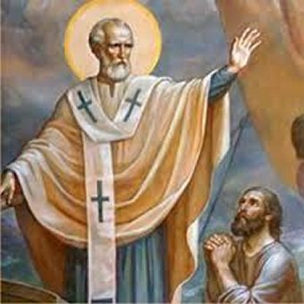
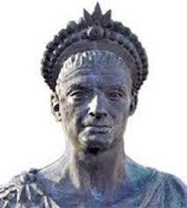
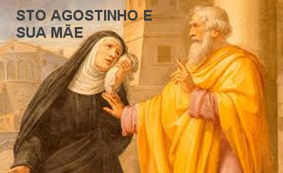

AMIZADE SINCERA
VIDA RELIGIOSA
Na verdade ele
procurou se desembaraçar dos negócios e de suas posições no viver civil, para se
dedicar integralmente as atividades e compromissos com a Igreja.
Com esta
finalidade, cheio de disposição e boa vontade, se aplicou em conhecer também a História
da Igreja, os grandes Santos e as Comemorações anuais, além de realizar um grande
aprofundamento dos estudos na Teologia e nas Sagradas Escrituras.
À medida que se
aprofundava nos conhecimentos, com apenas três anos de dedicação ao bispado,
incrementou também a sua aptidão para escrever, com o objetivo de transmitir
suas idéias em beneficio do povo, colocando-as impressas em livros para
conhecimento e consultas em ocasiões oportunas. Assim escreveu e publicou
“As Virgens” e
“As Viúvas”, aumentando o número
dos seus escritos que lhe valeu o título de “Doutor e Padre da Igreja”.
Com seus escritos,
calou as heresias e abriu um vasto campo ao bom e sadio conhecimento dos cristãos
que desejavam se aprofundar na religião, e também, para serem beneficiados pela
magnânima e eterna bondade de nosso DEUS. Quem busca conhecer DEUS, também
recebe as SUAS preciosas
“Graças”.
Por outro lado,
também definiu responsabilidades na sua Diocese de Milão, exercitando um coerente
e atencioso espírito de vigilância, com o objetivo de escolher os candidatos certos
ao sacerdócio. Cuidadosamente elaborou um currículo funcional com as matérias
necessárias, para de fato
orientar e propiciar a boa instrução ao seminarista.
Sátiro, o amado
irmão de Ambrósio, abandonou o serviço como Advogado do Estado, para se dedicar
a administração e direção da casa de seu irmão, que agora sendo Bispo necessitava
muito mais do seu auxílio. Anteriormente o seu irmão já o ajudava em diversos
trabalhos em várias oportunidades. Todavia, logo no inicio do episcopado,
provavelmente no ano 375, Sátiro com serio problema de saúde, acabou
falecendo.
O IMPERADOR ROMANO

Teodósio I, nascido
Flávio Teodósio, era denominado o Grande pelas vitoriosas guerras e a boa administração
que realizava em benefício do Grande Império Romano. Tomou posse como Imperador
no dia 19 de Janeiro de 379. Homem de família cristã, no ano seguinte decidiu
estabelecer que o Cristianismo Niceno, ou seja, o Catolicismo era a religião
oficial do Império Romano, mediante o edito de Tessalônica publicado em 27 de
Fevereiro de 380. No mesmo decreto, proibia todos os cultos pagãos.
Como bons cristãos
trabalhando pela causa comum, Teodósio e Ambrósio passaram a cultivar uma sólida e
respeitosa amizade, embora existissem algumas divergências entre o Imperador e o
Bispo, mas que não afetava o bom relacionamento de ambos. Em resumidas palavras,
um propugnava pela independência do Estado, enquanto o Bispo Ambrósio
argumentava a necessidade da obediência e plena independência da Igreja.
No ano 390, por
informações venenosas de um camareiro, sem que fosse realizado qualquer tipo
de apuração dos acontecimentos, Teodósio ordenou a tropa imperial de massacrar
indiscriminadamente os habitantes de Tessalônica, em resposta ao covarde
assassinato do seu Governador Militar, estabelecido na cidade. Como vingança
autorizada por Teodósio, a tropa militar preparou um circo para jogos e
apresentações, fazendo muita publicidade na cidade. No dia marcado, com o povo
reunido aguardando o evento, entraram mais de 100 soldados armados que
massacraram sem piedade todas as pessoas que estavam presentes. Poucos
conseguiram fugir. No final da barbaridade foram contados mais de 700 cadáveres
de homens, mulheres, velhos e crianças, causando tristeza e pesar na cidade e no
mundo civilizado.
O fato ressoou
em todo o Império Romano, levantando um clamor geral de indignação pela absurda
covardia. O próprio Teodósio ficou horrorizado, mas na verdade, ele foi o maior responsável
por ter concedido a autorização. O Bispo Ambrósio ciente dos fatos ocorridos e
compenetrado da sua função eclesiástica, mesmo havendo um grande espírito de
amizade a Teodósio, assim como um natural respeito ao Imperador a exemplo de todos os
súditos, sobretudo, consciente de sua digna posição de representante de DEUS,
admoestou o Imperador, dizendo-lhe: “Que nenhum sacerdote da sua Diocese lhe daria
a absolvição”.
E como Teodósio lhe tivesse dito que o próprio Rei David com toda a sua sabedoria
havia cometido assassinato e adultério, o Bispo Ambrósio respondeu: "Você diz ter imitado David com seus erros...
Significa dizer que você reconhece a sua culpa!" O Imperador não quis conversar e saiu.
Como não podia deixar
de ser, Ambrósio impôs uma excomunhão temporária ao Imperador, até que ele mostrasse
em público um sincero arrependimento pela sua terrível ordem de matança, que
revelou um gesto terrível, desumano, cruel e que infligiu a Lei Divina. Mas o
Imperador orgulhoso de seu cargo, não gostou daquelas palavras, e sentiu-se
ofendido. Por isso mesmo, para mostrar que ninguém tinha o direito de lhe dar
qualquer ordem, poucos dias após, Teodósio se dirigiu à Igreja com um aparato militar. Lá chegando, encontrou o Bispo Ambrósio à porta do Templo Sagrado,
e que não o deixou entrar, dizendo-lhe:
- "Vejo
que por desgraça, o senhor Imperador, não mediu racionalmente a gravidade do
fato sanguinário ordenado por ti mesmo, e aqui está cheio de ódio contra mim.
Não acrescentes um novo crime ao que já pesa sobre tua pessoa. Retira-te e
submete-te à penitência que DEUS te impõe. Já que imitaste o Rei David no crime,
imita-o também na penitência!”
Com lágrimas nos
olhos, o Imperador refletiu e se retirou. Passaram-se oito longos meses sem que
ele se apresentasse na Igreja, e nem o Bispo fosse o Palácio.
Por fim, a Fé
triunfou sobre o orgulho. Na manhã do dia de Natal, banhado em lágrimas, o Imperador
disse a seu camareiro:“Não sentes minha desdita? A Igreja de DEUS está aberta até para os escravos
e mendigos; porém, para o Imperador está fechada, e com ela a porta do Céu também,
pois JESUS CRISTO disse: O que ligares na Terra será ligado nos Céus, e o que
desligares na Terra será desligado nos Céus”. (Mt 16,19)
Decidido a obter
o perdão de DEUS, dirigiu-e à igreja, onde de pé o esperava Santo Ambrósio, no
alto da escadaria. Foi uma conversa séria, com poucas palavras e direta:
- “Aqui estou,
livra-me do meu pecado.”
(Rogou o Imperador).
– “Onde está
tua penitência?”(Perguntou
o Santo).
– “Suplico-te
que me livres desta pena, em consideração da clemência misericordiosa de nossa
Mãe a Igreja. Não me feches a porta. Dize-me o que devo fazer”. (Falou Teodósio)
A decisão de Ambrósio
mostrou o incansável esforço da Santa Igreja no sentido de abrandar os costumes pagãos.
Assim, Ambrósio exigiu de Teodósio a promulgação de uma lei determinando que as
sentenças de morte e confisco de bens, não fossem executadas antes de 30 dias, e
que deveriam ser primeiro apresentado ao Imperador para autorização e
confirmação da sentença. Teodósio concordou em fazer o decreto.
Então, o Bispo Ambrósio
conduziu Teodósio até diante do Sacrário, onde ele se ajoelhou. O Bispo depois de
fazer uma oração, traçou o sinal
da Cruz sobre ele concedendo-lhe a absolvição. Teodósio espontaneamente mantinha-se
ajoelhado, e olhando para o Sacrário, fez um respeitoso Sinal da Cruz.
Concluídas as orações, ele se despediu e saiu.
ADMINISTRAÇÃO
CRISTÃDE TEODÓSIO
No inicio do seu reinado,
como Imperador do Grande Império Romano, ele era relativamente tolerante com os
pagãos, pois necessitava do apoio dos dirigentes pagãos. E assim, verbalmente
autorizava a conservação de templos e estátuas pagãs “como edifícios públicos úteis”. Todavia a partir do final do primeiro ano
de administração, erradicou energicamente todos os vestígios do paganismo
existente. A sua primeira determinação para dificultar o paganismo foi
justamente no ano 381 quando renovou a proibição dos sacrifícios, conforme
anteriormente o Imperador Constantino havia determinado. E assim, na
continuidade, dissolveu associações pagãs e destruiu os seus templos, onde
estivessem.
pagãos. E assim, verbalmente
autorizava a conservação de templos e estátuas pagãs “como edifícios públicos úteis”. Todavia a partir do final do primeiro ano
de administração, erradicou energicamente todos os vestígios do paganismo
existente. A sua primeira determinação para dificultar o paganismo foi
justamente no ano 381 quando renovou a proibição dos sacrifícios, conforme
anteriormente o Imperador Constantino havia determinado. E assim, na
continuidade, dissolveu associações pagãs e destruiu os seus templos, onde
estivessem.
A aparente mudança
de política que se podia observar nos seus decretos imperiais passou a ser atribuída
à crescente e frequente influência do Bispo Ambrósio. Depois de ultrapassados aqueles
acontecimentos da excomunhão, a amizade e o respeito se consolidou firmemente
entre o Imperador Teodósio I e o Bispo Ambrósio.
Também desde então,
se firmou o poder eclesiástico para julgar os poderes públicos, não só em questões
dogmáticas, mas também nas questões oriundas de erros públicos dos dirigentes. E esta
realidade prevaleceu até a Civilização Moderna.
O Imperador Teodósio
morreu em Milão por causa de um edema vascular, em 17 de janeiro de 395. O Bispo Ambrósio
providenciou e organizou tudo para que o seu corpo repousasse numa propriedade em Milão. E
como última homenagem ao seu amigo, Ambrósio pronunciou um panegírico (discurso
de louvor) intitulado "De
Obitu Theodosii”,
no qual detalhou a energia e o trabalho de Teodósio, na supressão da heresia e
do paganismo. Seus restos mortais foram trasladados definitivamente para Constantinopla
no dia 8 de novembro de 395. A Igreja Ortodoxa reconhece Teodósio como Santo.
CONVERSÃO DE
SANTO AGOSTINHO

Agostinho era
professor em Cartago, mas não estava satisfeito com as condições de trabalho. Sendo um
homem inteligente, almejava alcançar um campo mais desenvolvido, para que também pudesse
progredir e revelar as suas boas qualidades. Assim, decidiu ir para Roma que era um
centro bastante desenvolvido, que oferecia oportunidade a todos.
Chegando a Roma,
encontrou hospedagem na casa de uma pessoa que também professava a mesma religião
“Maniqueu”. Mas por esta época, Agostinho já andava
desiludido com o maniqueísmo, pois começava a perceber as suas imperfeições e
seus disparates.
Trabalhando em
Roma, certo dia apareceu uma bela oportunidade. De Milão enviaram uma carta ao
Prefeito de Roma, solicitando um professor de retórica para a Escola da Cidade.
A notícia espalhou e ele foi conversar com o Prefeito de Roma solicitando a vaga
em Milão. O Prefeito o submeteu aos testes necessários e observando as suas boas
qualidades, o aprovou. Agostinho viajou para Milão no ano 384 e foi contratado
pela Prefeitura local. Havia muito trabalho, e ele se empenhou decididamente,
revelando todas as suas melhores qualidades.
Em Milão, atraído
pelo dom de oratória do Bispo Ambrósio, foi algumas vezes à Igreja para ouvir as
suas homilias, e gostou. Aquela maneira de falar tão cativante, amistosa e
paternal de Santo Ambrósio, levou-o a procurá-lo diversas vezes para conversar
sobre religião, ensejando-lhe ouvir os argumentos do prelado sobre temas que
intimamente lhe perturbavam. Estava assim, numa fase de transição, querendo
saber qual era a verdade e sentia que no seu cérebro havia uma torrente
caudalosa de conceitos e teorias, que confundiam a sua razão, deixando-o
desorientado, não lhe permitindo enxergar a realidade dos fatos. E Ambrósio com
conhecimento e inteligência, abordou e lhe explicou todos aqueles pontos que
perturbavam Agostinho. Os diálogos eram animados, e primordialmente o alegrava,
porque satisfazia o seu desejo pessoal de conhecer a verdade. E dessa forma
acabou se convertendo definitivamente ao Cristianismo.
Nas Missas que
Agostinho voltou a frequentar, também para ouvir os sermões do Bispo Ambrósio, começou
a lhe despertar uma atração imensa, e cada vez maior, pela grandeza do conteúdo
que encerra o Mistério Eucarístico, que aos poucos ia gravando em seu coração,
desmoronando os últimos baluartes que continham guardadas aquelas falsas
e errôneas idéias sobre o cristianismo.

 PRÓXIMA PÁGINA
PRÓXIMA PÁGINA
PÁGINA ANTERIOR
RETORNA AO ÍNDICE